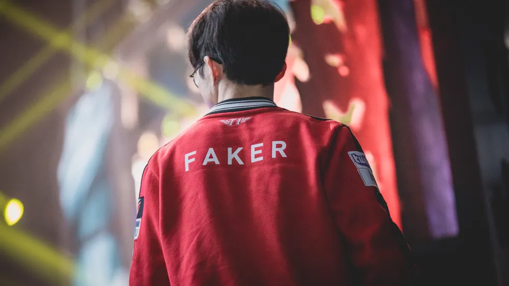
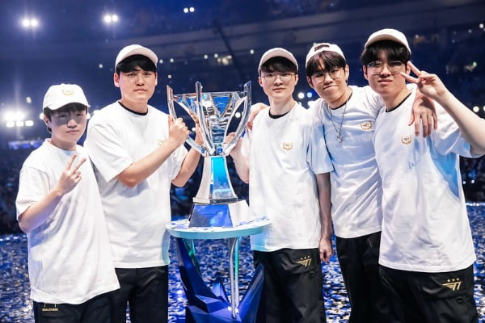

Introduction
Faker (real name: Lee Sang-hyeok, born May 7, 1996) is a South Korean professional League of Legends player. He plays as a mid laner for T1.
Accomplishments

- 5 World Championships, 2 Runner-Ups, 2 MSI Championships, 2 Runner-Ups, 10 LCK Championships, 6 Runner-Ups.
- World No. 1 in cumulative prize money for LoL esports pro-gamers.
- Winned two major international tournaments, MSI and Worlds, and achieved the non-calendar and career Grand Slams based on official Riot Games tournaments from 2015 Summer to 2015 Worlds to 2016 Spring to 2016 MSI, which only a few people have achieved so far.
- Achieved a Riot Games major international tournament poppet and achieved Worlds repeats twice and MSI repeats.
- Advanced to the Worlds finals twice in a row, and advanced to the finals a total of 7 times.
- Achieved the most wins and kills at Worlds.
- T1's only one-club man and franchise star.
- Winner of the inaugural Esports World Cup and gold medalist at the 2022 Hangzhou Asian Games.